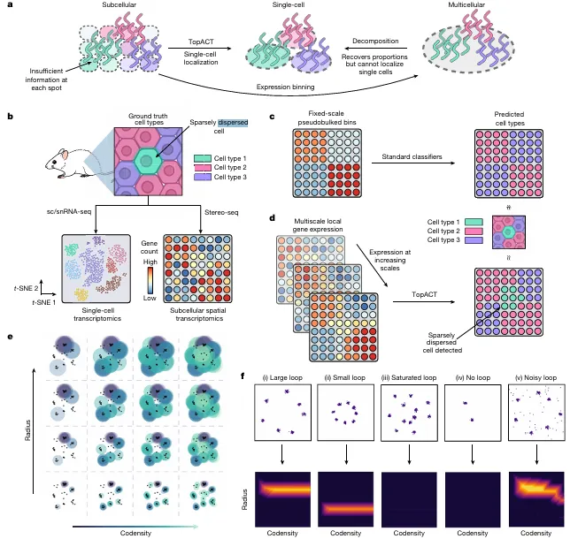
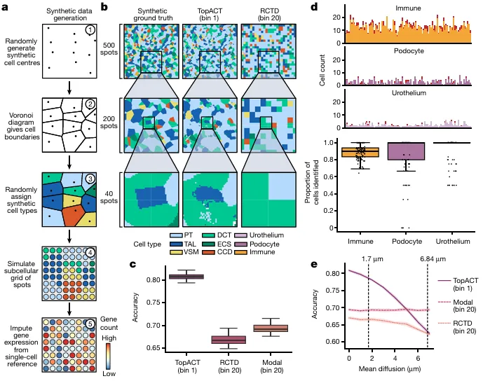
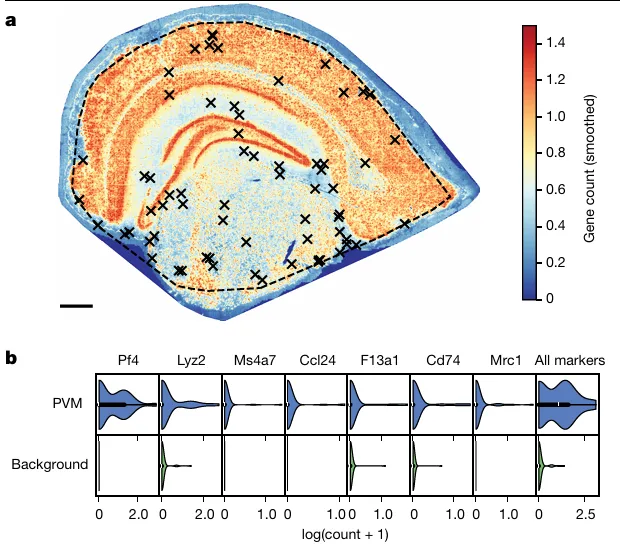
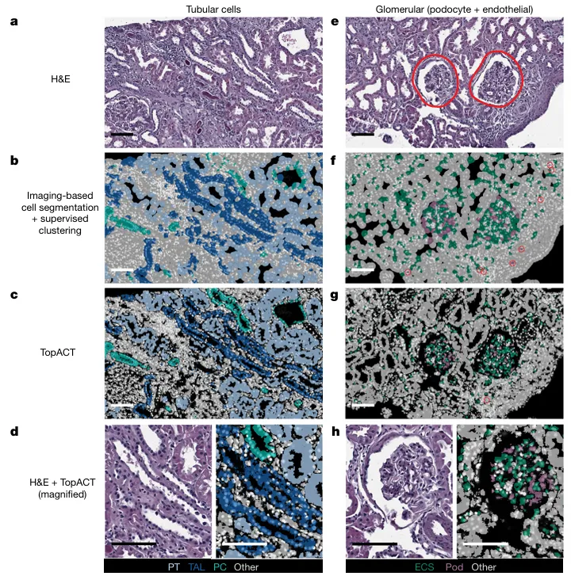
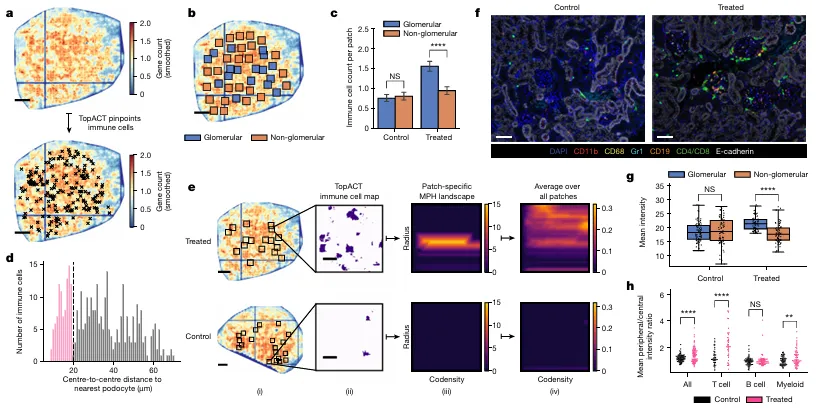

谁说一定要去卷积，亚细胞分辨率空转分析的新方法
原文：https://mp.weixin.qq.com/s?__biz=MzAwMzIzOTk5OQ==&mid=2247528207&idx=1&sn=13aafaa75639311cfd0940c34dc25dbe&chksm=9b3c165fac4b9f490188575c858440128fcee034cb1878ca2c28ec7ac9ff0753e2a3ce543412#rd 合集：空间转录组 / 文献速递
一、写在前面
现如今的空间转录组能够能够在原组织位检测数百万个 位点的基因表达量(不熟悉空转同学建议看一下我们的空转合集：点击跳转)，这不得不让空转领域面对测序深度、空间分辨率、样本大小这三个因素的平衡(几乎是一个不可能三角)。对于常见的两种空转建库策略——image-base和sequencing-base的后者而言，分辨率在不断的提升，目前已经能够达到亚细胞分辨率水平，但此前并没有一个工具能够综合转录表达量、空间坐标信息完成对亚细胞分辨率的空转数据完成单细胞水平的精准注释。因此，作者发布了基于multiparameter persistent homology(MPH)的TopACT 工具与算法，并在人类肾脏、小鼠肾脏、小鼠大脑的stereo-seq 与Xenium 数据中进行了性能测试，能够精准识别并注释样本中空间分布、转录本丰度稀疏的免疫细胞。
二、背景介绍
在sequence-base的空转中，spot与单个细胞的统一一直是个难题(SeekSpace除外)；而image-base的空转通常又面临通量低的问题(捕获基因数量有限)。目前空转数据的细胞注释策略一般也分为两种：对于spot大于细胞 尺寸的数据用去卷积(通常基于非负矩阵分解)，对于分辨率低于细胞 尺寸的数据做合并(Figure 1a)。而以上这两种策略通常也需要依赖于scRNA-seq或snRNA-seq的数据作为参考数据集(Figure 1b)。对于本文重点关注的亚细胞分辨率空转数据(例如2μm分辨率的HDST与Visium HD、0.5~0.8μm分辨率的Seq-Scope、0.5~0.715μm分辨率的stereo-seq)而言，此前的主要策略是进行标准细胞类型分群或贝叶斯算法(可以不基于细胞分割进行细胞的划分)。这些亚细胞spot通常转录本丰度 相对较低 ，将他们与临近的spot精准整合 为单细胞 水平的单位难度通常较大(尤其是在细胞边界不清晰或无细胞边界信息时)。此时，需要一个可以不依赖先验细胞边界也能够灵活调整spot合并的滑动窗口、能够灵敏检测丰度稀疏转录本及分布稀疏细胞类型的工具来解决空转难题。因此，作者设计了TopACT能够对各spot进行拓扑性(基于MPH)地细胞类型自动注释(Fig1d)，其亮点是扫描spot的滑窗大小是动态的(Fig.1e,f)。

Figure1
三、主要结果
1、在人工合成数据上的表现 作者分别使用了四个数据集来检验TopACT的性能。作者首先在一个人工模拟 的数据集上进行了测试(Fig.2a)，相较于RCTD的解卷积过程而言(Fig.2b)，TopACT的Immune、Podocyte、Urothelium的准确性(Fig.2c)较高。分布稀疏 的细胞类型通常更难 被检测到，但TopACT的对于Immune、Podocyte、Urothelium(模拟的是肾脏样本，这三类细胞比例较低)检出率 仍然维持在较高 水平，均值均接近1(Fig.2d)。在高分辨率的空转平台中，spot细胞类型的鉴定往往容易受到RNA扩散效应的影响，各个技术平台的RNA扩散强度也不尽相同(例如Seq-Scope的侧向扩散距离约为1.7μm，Stereo-seq的侧向扩散强度约为6，84μm)，可以明显看出，TopACT随着扩散距离的增加，准确率的稳定性要高于RCTD(Fig.2e)。

Figure 2
2、在鼠脑中定位巨噬细胞
对于基于stereo-seq的cell bin鼠脑数据而言，很难在其中获得除了Microglia以外的其它免疫细胞 ，但TopACT能够在鼠脑的stereo-seq数据中精准识别perivascular macrophage(PVM)并且能够观察到具有区分度 的marker。

Figure.3
3、将TopACT迁移到image-base 的空转平台
前面我们介绍过，image-base的空转平台虽然能够高效的捕获实验者感兴趣的基因或通路，但它们能够捕获到的基因数量较为有限。为了测试TopACT能够在输入基因数量较低 时仍能运行，作者构建了一个包含377个基因 的IgAN病人活检Xenium平台空转数据(Fig.4)。作者利用Seurat对基于image的细胞分割结果进行了聚类注释，并使用TopACT对数据进行了注释，二者对比结果显示前者丢失了细胞的粒度感 及形状的异质性，而后者对于肾脏近曲小管、髓袢、收集管主细胞的注释而言均与H&E结果更加类似(Fig.4c,d)了。例如，足细胞是一类包含于肾小球内的细胞类型，image分割的注释结果中，在肾小球外也能够观察到足细胞的注释出现，而TopACT的注释结果中足细胞则主要分布在肾小球范围中(Fig.4g,h)。这在一定程度上证明了TopACT适用于image-base的空转平台数据。

Figure4
4、精准定位小鼠肾脏中的免疫细胞
免疫细胞在实体组织的空转数据中定位通常比较困难，原因如下：(1)免疫细胞通常大小不一 ，较小的细胞难以发现；(2)免疫细胞在基质组织中分布较为分散 ，提升了注释难度；(3)免疫细胞的代谢活性 通常没有基质细胞高，在代谢旺盛的肾脏组织中更是如此，若同一个bin或区域中同时存在肾小管细胞和免疫细胞，显然肾小管细胞的特征会占据主导地位。作者对小鼠系统性红斑狼疮肾脏的stereo-seq数据(Fig.5a)分别进行了依赖于ssDNA细胞分割的注释与TopACT的注释，可以明显发现经TLR7抑制剂处理的组别可以观察到肾小球中的免疫细胞数量显著上升(Fig.5b,c)。根据免疫细胞与足细胞的平均距离来看(Fig.5d)，免疫细胞甚至有可能"渗入 "足细胞之中(不过biomamba认为这里无法排除这一现象是RNA扩散 /细胞垂直方向上重合 情况造成的)。此外TopACT还可以通过MPH的激活半径参数来判断是否存在免疫细胞环 ，例如在TLR7抑制剂处处理后的肾小球周围可以明显观察到这一现象(Fig.5e)。上述现象也看通过对T Cell(CD4、CD8)、B Cell(CD19)、Myeloid(CD11b、CD68、GR1)对应marker的染色被证实。此外，TopACT还能够做到对肾小球内外(Fig.5g)、肾小球中心区域/周边区域(Fig.5h)的免疫细胞强度进行评估。可以说TopACT能够很大程度上解决免疫细胞在空转组织中定位注释的问题。

Figure 5
四、讨论
随着一个组学的兴起，各式各样的技术平台会层出不穷，空间转录组的分辨率在不断的被提升，技术快速更新的同时也给算法、工具的开发、更新留出了空间。TopACT可谓是给目前分辨率低于细胞大小的空转平台提供了一盏指路明灯，一改按照坐标分bin或细胞分割后去卷积的思路，其能够对亚细胞分辨率spot进行注释，推荐大家赶紧用起来。当然，也不能光吹，毕竟去卷积的工具软件繁多，互相之间能够做benckmarking，而像TopACT这样做aggregate的工具还比较少，其性能还有待进一步观察，也存在被其它软件工具替代的可能。

如何联系我们

 留一个领取资料、免费两周学习版上服务器的微信号 ，方便各位随时交流（别问在么，添加时直接说来意）。同时我们也构建了交流群矩阵，欢迎大家入群讨论。
留一个领取资料、免费两周学习版上服务器的微信号 ，方便各位随时交流（别问在么，添加时直接说来意）。同时我们也构建了交流群矩阵，欢迎大家入群讨论。
大家可以阅读完这几篇之后添加给生信入门初学者的小贴士 如何搜索公众号过往发布内容
已有生信基地联系方式的同学无需重复添加

 您点的每个赞和在看，我都认真当成了喜欢
您点的每个赞和在看，我都认真当成了喜欢